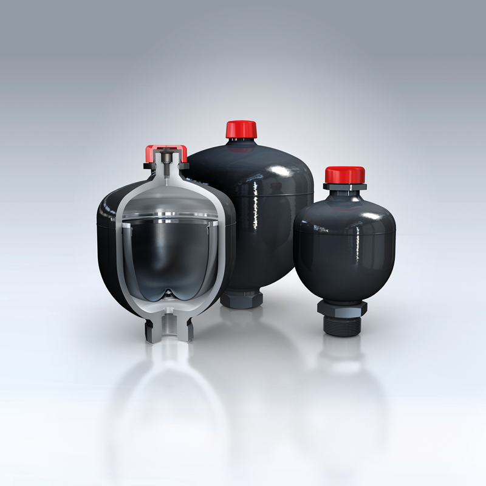

Kernproduct
Membraanaccumulatoren
Compacte, gewichtsgeoptimaliseerde accumulatoren met flexibel membraan voor industriële en mobiele hydrauliek.
0,07–3,5 ltot 350 bar−35 tot +80 °C
Selectie / offerte via Hobo Hydrauliek →